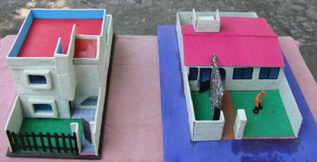

Es la representación tridimensional, a escala, de una obra compleja. En general, para la construcción de edificios, plantas industriales, barcos, aviones o piezas específicas, se utilizan planos. Los planos son representaciones a escala, en dos dimensiones, de la obra que se pretende construir o se ha construido. En algunos casos, la información que suministran los planos es insuficiente, por lo cual se recurre a las maquetas. Su utilización, desvela problemas constructivos que solo con los planos, no se habrían visto. En los planos, la visión espacial no es intuitiva, en las maquetas sí.

Su objetivo primordial es servir como un modelo de estudio que permita visualizar la realidad física de un proyecto antes de ser construido a tamaño real.
Son los elementos que no son visibles pero están presentes, como el punto, la línea, el plano y el volumen en la mente del diseñador.
Cuando los elementos conceptuales se materializan: forma, medida, color y textura.
Gobiernan la ubicación y la interrelación de las formas: dirección, posición, espacio y gravedad.
Subyacen el contenido y el alcance de un diseño: representación, significado y función.
Ventajas: La visión espacial intuitiva, facilidad de comunicación con el cliente y detección de errores de diseño.
Desventajas: Tiempo de elaboración, costo de ciertos materiales y fragilidad en el transporte.
Las maquetas deben protegerse del polvo, la humedad y la luz solar directa (que puede amarillear los pegamentos y cartones). Su uso varía desde lo académico hasta lo profesional-comercial.
Permite al arquitecto "jugar" con los volúmenes y corregir la composición en tiempo real.
Es el puente perfecto entre el técnico y el cliente. "La maqueta permite caminar con los dedos por donde el usuario caminará con los pies".